ECG Blog #546 — Nhát nào là mấu chốt?
Tôi được gửi bản ghi này ...
- Bệnh nhân có điện tâm đồ ở Hình 1 là một người đàn ông ngoài 60 tuổi mắc CKD (bệnh thận mạn — Chronic Kidney Disease) — đến khám vì "chóng mặt".
CÂU HỎI:
Có thể hiểu ngay vì sao bệnh nhân này có thể bị chóng mặt — vì nhịp tim rõ ràng là bất thường.
- Bắt đầu đánh giá nhịp này như thế nào?
- GỢI Ý: Nhát nào là MẤU CHỐT giúp chúng ta hiểu được căn nguyên của nhịp này?
- Và — Điều gì có thể gây ra nhịp này?

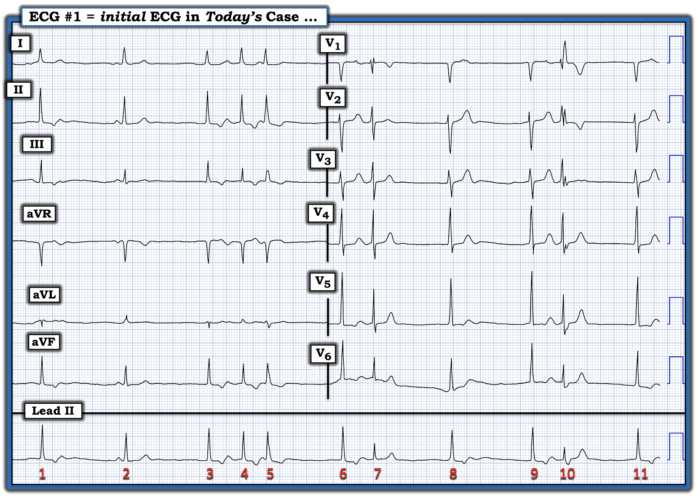
SUY NGHĨ CỦA TÔI:
Tôi hoàn toàn thừa nhận rằng tôi đã mất một lúc mới biết nên tiến hành đánh giá nhịp này ra sao. Đó là vì nhịp này rõ ràng không đều, với nhiều thành phần khác nhau.
- ĐIỂM THEN CHỐT #1: Khi gặp một nhịp có nhiều thành phần khác nhau (trong đó có những phần rõ ràng phức tạp hơn những phần khác) — Hãy bắt đầu với (các) phần DỄ HƠN!
- Để dành những phần khó diễn giải hơn của bản ghi cho sau ...
Ban đầu tôi không chắc mình đang thấy gì ở Hình 1.
- Tôi tập trung chú ý vào dải nhịp chuyển đạo II dài. Ở Hình 2, tôi làm nổi bật một nhát đã thu hút "ánh mắt" của tôi.

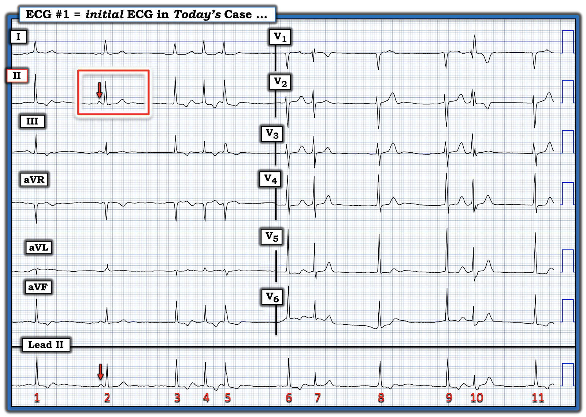
MẤU CHỐT của nhịp hôm nay ...
Nhát #2 là MẤU CHỐT của nhịp hôm nay.
- Nhát #2 là một nhát dẫn truyền từ xoang (mũi tên ĐỎ trên dải nhịp chuyển đạo II dài cho thấy một sóng P xoang dương với khoảng PR bình thường đi trước nhát này). Tôi đã làm nổi bật nhát #2 này trong một hình chữ nhật ĐỎ trên hình chuyển đạo II của bản ghi 12 chuyển đạo.
- ĐIỂM THEN CHỐT #2: Lý do nhát #2 thiết yếu đến vậy để hiểu nhịp hôm nay — là vì đây là nhát duy nhất cho chúng ta thấy một "sóng T bình thường" trông như thế nào!
CÂU HỎI:
- ĐIỂM THEN CHỐT #2 có giải thích được vì sao sóng ST-T của các nhát #1,3,4,6,8,9 và 11 trông khác với sóng ST-T của nhát #2 hay không?
- GỢI Ý: Hãy xem Hình 3 ...

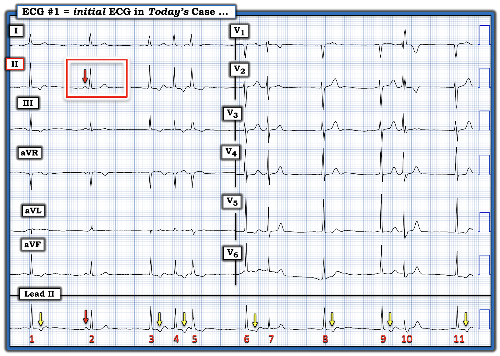
TRẢ LỜI:
Nhát #2 là nhát dẫn truyền từ xoang duy nhất trong bản ghi này.
- Tất cả các nhát ở Hình 3 (ngoại trừ nhát #10) đều có phức bộ QRS hẹp. Điều này xác nhận rằng tất cả các nhát hẹp này đều là nhát trên thất. Vì không có sóng P nào đi trước các nhát #1,3,6,8,9 và 11 — đây hẳn phải là các nhát thoát bộ nối.
- ĐIỂM THEN CHỐT #3 (Khái niệm nâng cao!): Mặc dù hình dạng của các nhát thoát bộ nối trông giống hình dạng của nhát dẫn truyền từ xoang #2 — các nhát thoát theo sau mỗi khoảng ngưng ngắn trên dải nhịp chuyển đạo II dài ( = các nhát #1,3,6,8,9,11) đều có vẻ cao hơn một chút so với nhát dẫn truyền từ xoang duy nhất là nhát #2.
- Đôi khi trong các rối loạn nhịp phức tạp — có thể khó phân biệt một hay nhiều nhát là dẫn truyền từ xoang hay là nhát thoát từ nút AV. Nhận biết được một khác biệt nhỏ về hình dạng phức bộ QRS của các nhát thoát trên một bản ghi như vậy có thể cung cấp một manh mối tinh tế cho biết các nhát này có được dẫn truyền hay không. (Một ví dụ về khái niệm nâng cao này, trong đó việc nhận ra hình dạng QRS hơi khác biệt cho biết ngay nhát nào là nhát "thoát" và nhát nào là nhát dẫn truyền — có thể xem ở ECG Blog #63).
ĐIỂM THEN CHỐT #4: Lý do hợp lý nhất cho các sóng lệch âm được làm nổi bật bằng mũi tên VÀNG trên dải nhịp chuyển đạo II dài ở Hình 3 — là các sóng lệch âm này là sóng P ngược dòng xuất phát từ các nhát thoát bộ nối.
- Lưu ý rằng khoảng RP' (tức là khoảng cách từ sóng R của các nhát #1,3,6,8,9,11 ở Hình 3 — đến sóng lệch âm theo sau) đều bằng nhau!
- Cũng lưu ý rằng một phức bộ QRS khác theo sau sóng P ngược dòng của các nhát #3, 6, 8 và 9 để tạo ra các nhát #4,7 và 10. Các nhát #4,7 và 10 này được gọi là nhát "dội" (echo) (vì thay vì dẫn truyền xuống tâm thất, các xung động nhĩ trước những nhát này đã "quay đầu" và đi ngược trở lại tâm nhĩ).
==============================
Minh họa bằng giản đồ bậc thang:
Phải thừa nhận rằng nhịp hôm nay phức tạp. Dù vậy — nó là một ví dụ tuyệt vời cho thấy việc vẽ giản đồ bậc thang (laddergram) giúp chúng ta hiểu cơ chế của một nhịp "thoát–bắt được" (escape-capture) như thế nào, trong đó "bắt được" là kết quả của các sóng P ngược dòng tạo ra các nhát "dội" (echo).
- Tôi bảo đảm rằng cơ chế phức tạp này sẽ trở nên rõ ràng hơn khi theo dõi từng bước tôi dựng giản đồ bậc thang hôm nay — bắt đầu với phần chú thích ở Hình 4.

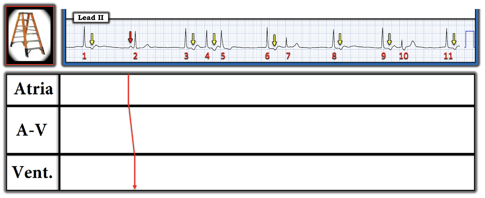

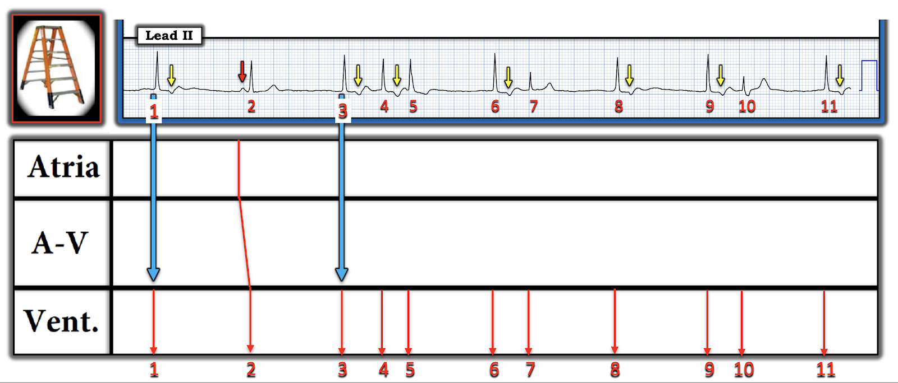
Các mũi tên XANH lớn trong hình này cho thấy theo sơ đồ rằng tôi đã canh thời điểm của từng mũi tên ĐỎ trong Tầng Thất theo thời điểm xuất hiện của các nhát này trên dải nhịp.


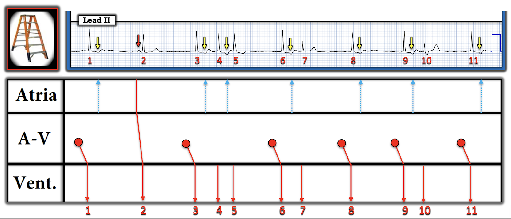

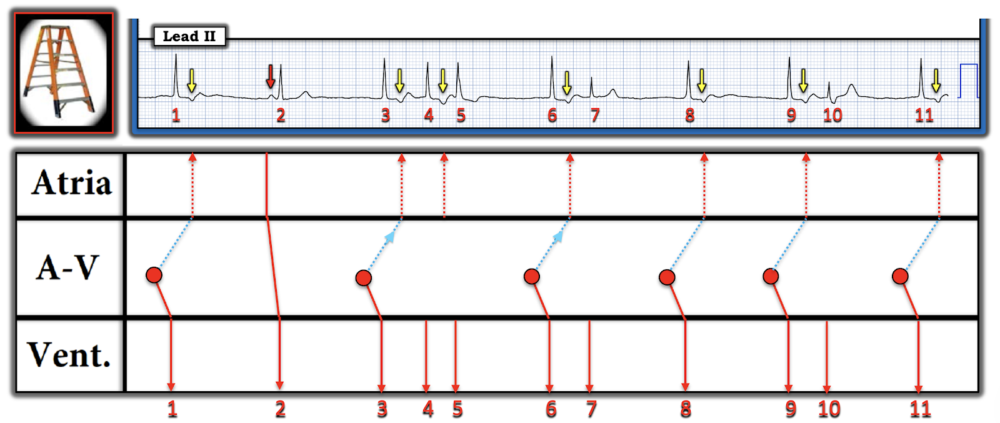

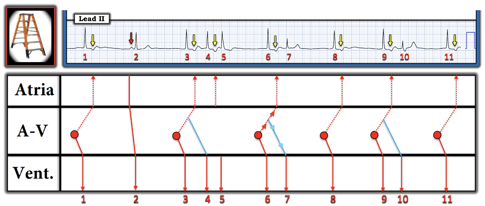

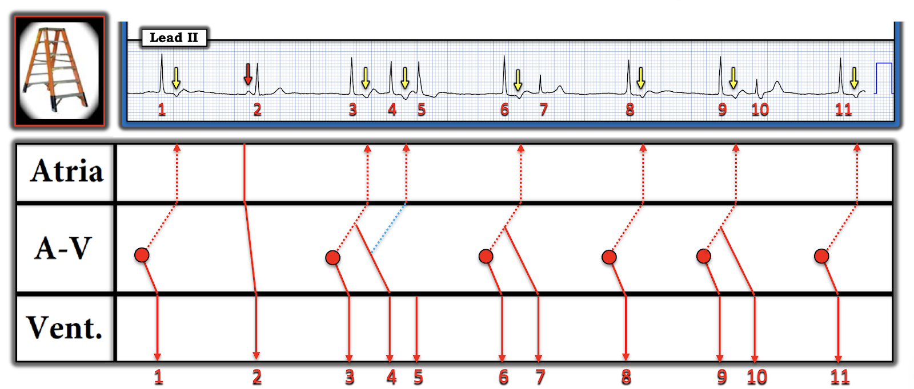

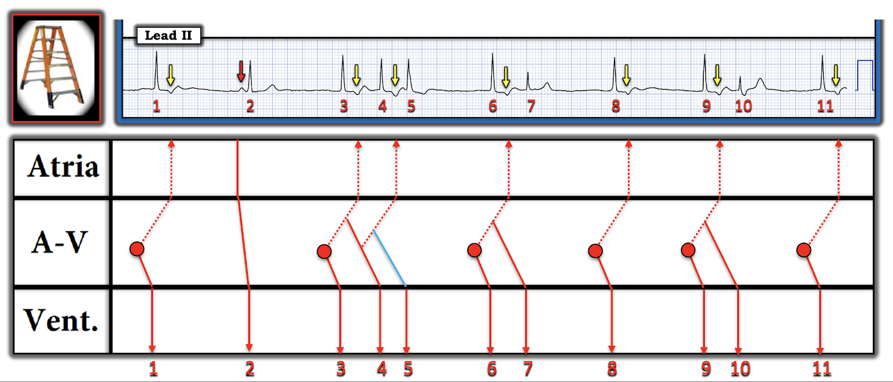
Lưu ý trong Hình 11 này rằng dẫn truyền ngược dòng trở lại tâm nhĩ, rồi dẫn truyền xuôi để tạo ra một phức bộ QRS khác, không phải lúc nào cũng xảy ra. Lý do vì sao hiện tượng này lúc xảy ra, lúc không thì chưa rõ.

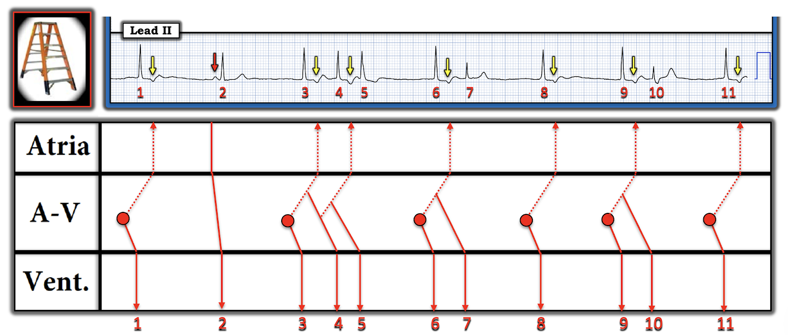
==============================
Tổng hợp lại tất cả:
Bất cứ khi nào gặp một rối loạn nhịp phức tạp — điều quan trọng là luôn quay lại bối cảnh lâm sàng và bản ghi 12 chuyển đạo gốc.
- Bệnh sử duy nhất được cung cấp về bệnh nhân hôm nay — là người đàn ông ngoài 60 tuổi này đến khám vì "chóng mặt" — và có tiền sử CKD (bệnh thận mạn — Chronic Kidney Disease).
- Khi đã biết rằng tăng kali máu nổi tiếng là gây ra những rối loạn nhịp bất thường, thường đặc trưng bởi nhịp chậm và các dạng rối loạn dẫn truyền AV bất thường — việc kiểm tra nồng độ K+ huyết thanh là thiết yếu trong ca hôm nay.
- Dù tinh tế — tôi nhận thấy một số sóng T ở chuyển đạo trước ngực nhọn hơn mong đợi, khiến tôi nghi ngờ có một mức độ tăng kali máu nào đó góp phần. (Đáng tiếc — tôi không thể biết được nồng độ K+ huyết thanh trong ca hôm nay).
- Chú ý đến đoạn ST ở các chuyển đạo V3,V4,V5 (trong hình chữ nhật XANH ở Hình 13) — gợi ý đoạn ST thẳng đuỗn và có phần chênh xuống. Có lẽ đây là một OMI thành sau mới xảy ra hoặc cấp tính, có thể là nguyên nhân gây nhịp chậm với các nhát thoát bộ nối? (Đáng tiếc — tôi không thể có được thông tin theo dõi về khả năng này trong ca hôm nay).
- Cuối cùng — Nếu nhìn vào Hình 13 ở các chuyển đạo trước ngực ghi đồng thời với nhát #10 — sẽ thấy rõ nhát này được dẫn truyền kèm lệch hướng dạng RBBB (rsR' của nhát #10 ở chuyển đạo V1 — với sóng S tận rộng ở chuyển đạo V6 của nhát #10). Điều này giải thích vì sao nhát #10 trên dải nhịp chuyển đạo II dài trông khác và hơi rộng hơn các nhát khác trên bản ghi này.
- Nó cũng giải thích vì sao nhát #7 trên dải nhịp chuyển đạo II dài thấp hơn các nhát khác trên bản ghi này (Nhát #7 được dẫn truyền kèm lệch hướng dạng RBBB không hoàn toàn — như gợi ý bởi hình thái rSr' của nhát #7 ở chuyển đạo V1 ghi đồng thời).

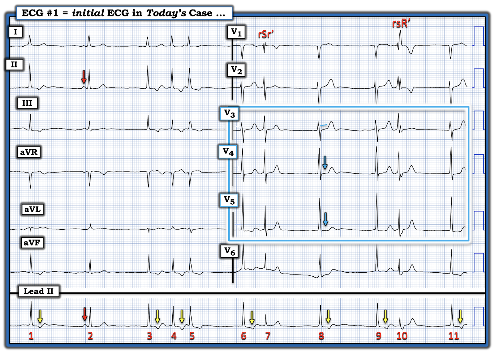
==================================
Lời cảm ơn: Xin cảm ơn 林柏志 (từ Đài Loan) và M Shah (từ Srinagar, Ấn Độ) — đã cho phép tôi sử dụng ca bệnh và bản ghi này.
==================================